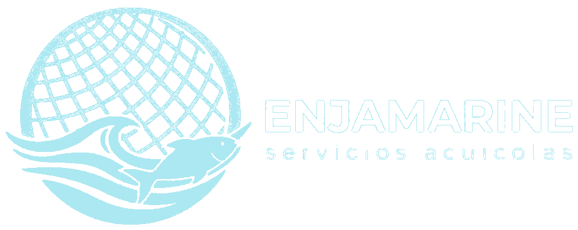
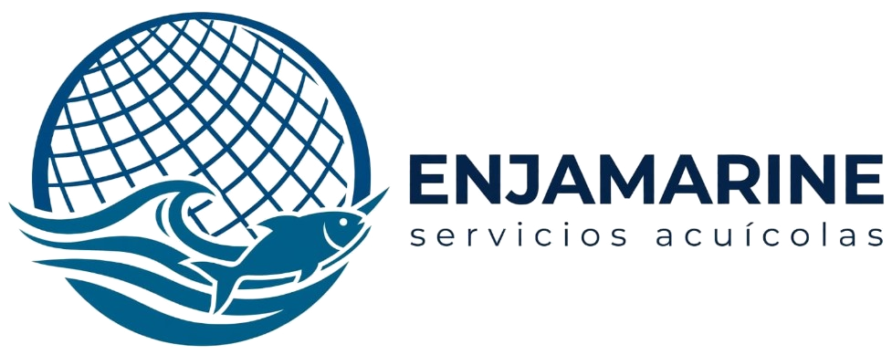
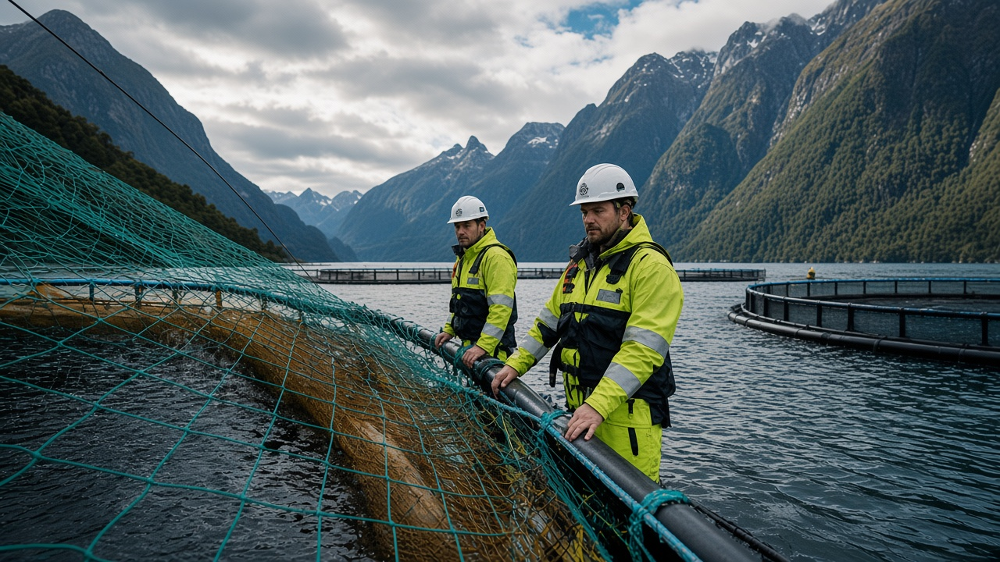
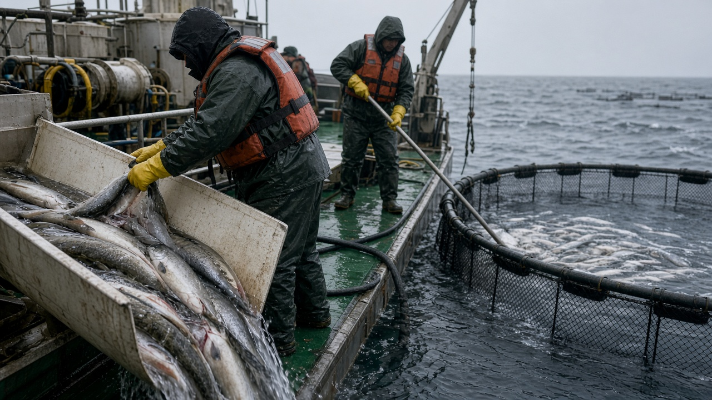
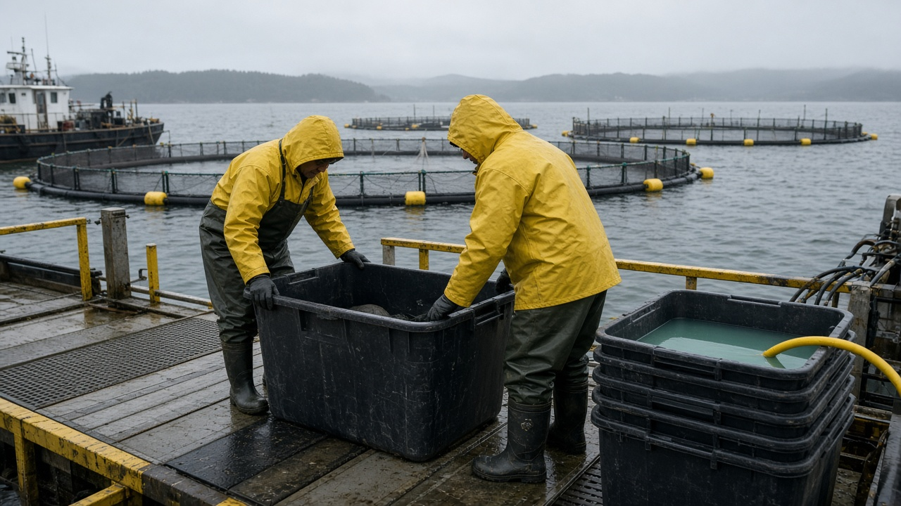
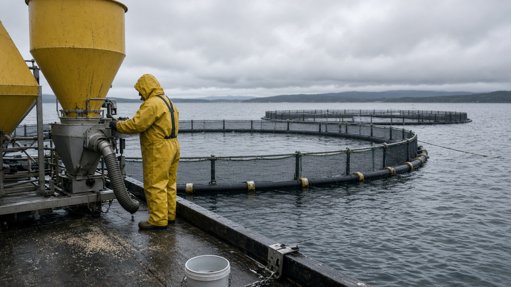
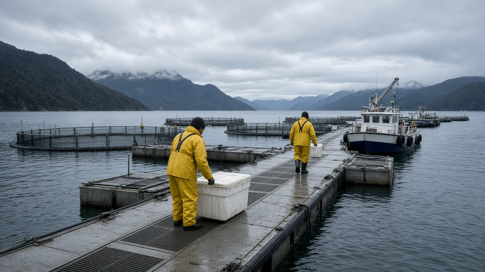

Servicios
05 líneas de apoyo en el centro

Inversiones Enjamarine SpA
Operarios para centros de cultivo en mar. Armamos la cuadrilla, cubrimos el turno y el centro sigue operando.
Quiénes somos
Inversiones Enjamarine SpA presta personal capacitado a empresas mandantes. Conocemos la realidad del centro, el clima y los tiempos de la faena. El objetivo es que el centro opere sin detenciones, cumpliendo sus protocolos.
Servicios
05 líneas de apoyo en el centroModalidad
02 faena o personal fijoTurnos
7×7 también 10×10 y 14×14Continuidad
24 h reemplazo de operarioNuestros servicios

01
02
03
04
05Personal
Formas de trabajo
Contacto
Cotización sin compromiso. Visitas en Puerto Montt, Calbuco y Chiloé.